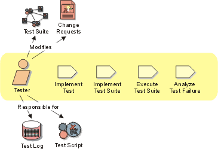

Role:
Tester
The Tester role is responsible for the core activities of the test effort,
which involves conducting the necessary tests and logging the outcomes of that
testing. This covers:
- Identifying the most appropriate implementation approach for a given test
- Implementing individual tests
- Setting up and executing the tests
- Logging outcomes and verifying test execution
- Analyzing and recovering from execution errors

Staffing 
Roles organize the responsibility for performing activities and developing
artifacts into logical groups. Each role can be assigned to one or more people,
and each person can fill one or more roles. When staffing the Tester role, you
need to consider both the skills required for the role and the different approaches
you can take to assigning staff to the role.
Skills
The knowledge and skill sets may vary depending on the types of tests being
executed and the phases of the project lifecycle, however in general, staff
filling the Tester role should have the following skills:
- knowledge of testing approaches and techniques
- diagnostic and problem-solving skills
- knowledge of the system or application being tested (desirable)
- knowledge of networking and system architecture (desirable)
Where automated testing is required, these skills should be considered in addition
to those already noted above:
- training in the appropriate use of test automation tools
- experience using test automation tools
- programming skills
- debugging and diagnostic skills
Role assignment approaches
The Tester role can be assigned in the following ways:
- Assign one or more test staff members to perform both the Tester and Test
Analyst roles. This is a fairly standard approach and is particularly suitable
for small teams and for any sized test team where the team is made up of
an experienced group of Testers of relatively equal skill levels.
- Assign one or more test staff members to perform the Tester role only.
This works well in large teams, and is also useful to separate responsibilities
when some of the test staff have more test automation experience than other
team members.
Note also that specific skill requirements vary depending on the type of testing
being conducted. For example, the skills needed to successfully utilize system
load testing automation tools are different from those needed for the automation
of system functional testing.
Further Information
We recommend recommend reading Kaner, Bach & Pettichord's Lessons Learned
in Software Testing [KAN99], which contains
an excellent collection of important concerns for test teams. Of special interest
to the Tester role are the chapters on The Role of the test group and
Thinking like a tester and Bug advocacy.
Copyright
© 1987 - 2001 Rational Software Corporation
|  Roles and Activities >
Roles and Activities >
 Tester
Tester